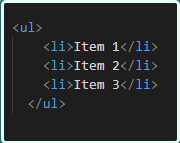
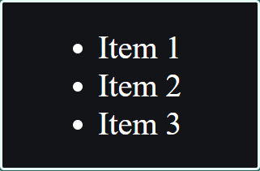

Существует два основных типа списков в HTML: маркированный список (ul) и нумерованный список (ol). Каждый тип содержит отдельные элементы списка, которые называются элементами списка (li).
Для создания ссылки необходимо сообщить браузеру, что является ссылкой, а также указать адрес документа, на который следует сделать ссылку. В качестве значения атрибута href используется адрес документа (URL, Universal Resource Locator, универсальный указатель ресурсов), на который происходит переход. Адрес ссылки может быть абсолютным и относительным. Абсолютные адреса работают везде и всюду независимо от имени сайта или веб-страницы, где прописана ссылка. Относительные ссылки, как следует из их названия, построены относительно текущего документа или корня сайта.
Маркированный список (ul) используется для создания списка с маркерами, такими как кружочки или другие иконки. Элементы списка могут быть ненумерованными и не иметь специального порядка. Создать маркированный список можно с помощью тега (ul), который обозначает "unordered list", и тега (li), который обозначает "list item". Например:
Пример:
В браузере:
